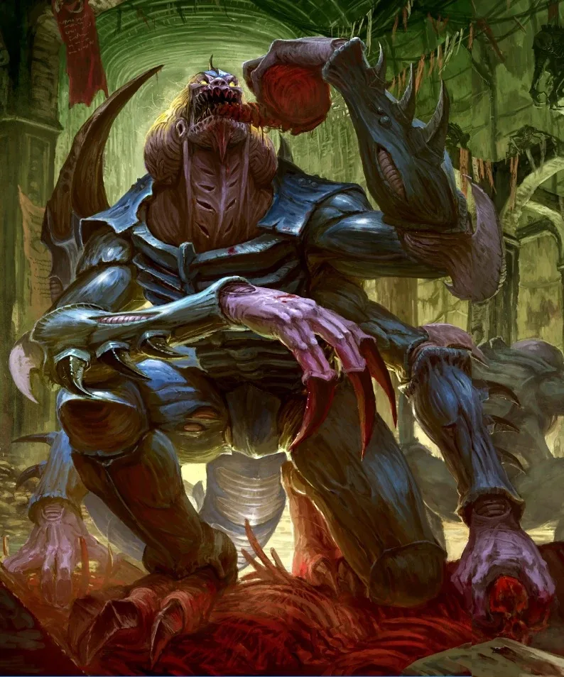

00อ่านหน้านี้อย่างไร
แต่ละกลุ่มเรียงจากยศสูงสุดลงไปต่ำสุด พร้อมหน้าที่ อำนาจ และจำนวนคนที่ดำรงตำแหน่งนั้นได้ บางองค์กร (เช่น Custodes และ Inquisition) เปิดเผยโครงสร้างเพียงบางส่วน เว็บนี้จึงใส่เฉพาะส่วนที่มีแหล่งอ้างอิง
01จักรวรรดิ: ผู้ปกครองสูงสุด

โครงสร้างอำนาจเหนือทุกองค์กรของจักรวรรดิ
- 1
The Emperor (ดิ เอ็มเพอเรอร์)
ผู้ปกครองตามนาม ประทับบน Golden Throne ไม่ได้สั่งการโดยตรงมาหมื่นปี
มีได้1 - 2
Lord Commander of the Imperium / Imperial Regent (ลอร์ด คอมมานเดอร์)
ประธานของ High Lords และผู้ปกครองจักรวรรดิในทางปฏิบัติ — ปัจจุบันคือ Roboute Guilliman
มีได้1 - 3
High Lords of Terra (ไฮ ลอร์ดส์ ออฟ เทอร์รา)
สภาสูงสุด (Senatorum Imperialis) ออกกฎหมาย ประกาศสงคราม และสั่ง Exterminatus ได้ มีเก้าที่นั่งที่แทบไม่เคยเปลี่ยน เช่น Master of the Administratum, ตัวแทน Inquisition, Ecclesiarch, Fabricator-General, Grand Provost Marshal, Paternoval Envoy (Navigator), Master of the Astronomican, Grand Master of Assassins และ Master of the Astra Telepathica
มีได้12 ที่นั่ง - 4
Warmaster (วอร์มาสเตอร์)
ผู้บัญชาการสงครามใหญ่ที่ได้รับแต่งตั้งเป็นกรณีพิเศษ ยุค 30K เป็นตำแหน่งของ Horus ปัจจุบันเป็นยศรองจาก Lord Commander Militant
มีได้แต่งตั้งเป็นครั้ง ๆ - 5
Lord Commander Militant / Lord High Admiral (ลอร์ด คอมมานเดอร์ มิลิแทนท์ / ลอร์ด ไฮ แอดมิรัล)
ผู้บัญชาการสูงสุดของกองทัพบก (Astra Militarum) และกองทัพเรือ
มีได้อย่างละ 1 - 6
Lord Commander Solar / Segmentum (ลอร์ด คอมมานเดอร์ โซลาร์)
ผู้บัญชาการกองทัพประจำแต่ละ Segmentum (เขตใหญ่ 5 เขตของกาแล็กซี)
มีได้1 ต่อ Segmentum - 7
Planetary Governor (แพลนเนตทารี กัฟเวอร์เนอร์)
ปกครองดาวแต่ละดวง ต้องส่งภาษีและทหาร (Tithe) ให้จักรวรรดิ
มีได้1 ต่อดาว
02Space Marines

โครงสร้างตาม Codex Astartes (บาง Chapter ใช้ชื่อยศต่างออกไป เช่น Space Wolves และ Dark Angels)
- 1
Chapter Master (แชปเตอร์ มาสเตอร์)
ผู้นำสูงสุดของ Chapter สั่งการกองทัพ กองเรือ และดาวบ้านเกิด อาจได้บัญชาการกองทัพจักรวรรดิทั้งเขตในยามสงคราม
มีได้1 ต่อ Chapter - 2
Chapter Command (แชปเตอร์ คอมมานด์)
ผู้เชี่ยวชาญระดับสูง: Chief Librarian (ผู้มีพลังจิต), Master of Sanctity (Chaplain), Chief Apothecary (แพทย์และผู้ดูแล gene-seed), Master of the Forge (Techmarine)
มีได้อย่างละ 1 - 3
Captain (กัปตัน)
ผู้นำกองร้อย 100 นาย และมักรับตำแหน่งดูแลงานของ Chapter เพิ่ม เช่น Master of the Fleet หรือ Master of Recruits
มีได้10 (1 ต่อกองร้อย) - 4
Lieutenant (ลิวเทแนนท์)
มือขวาของกัปตัน นำครึ่งกองร้อย (50 นาย) — ยศนี้กลับมาใช้ใหม่ในยุค Primaris
มีได้2 ต่อกองร้อย - 5
Sergeant (ซาร์เจนท์)
หัวหน้าหมู่ 5–10 นาย
มีได้1 ต่อหมู่ - 6
Battle-Brother (แบทเทิล บราเธอร์)
ทหาร Space Marine เต็มขั้น
มีได้ราว 1,000 ต่อ Chapter - 7
Scout / Neophyte (สเกาต์ / นีโอไฟต์)
ผู้ฝึกหัดที่ยังฝังอวัยวะไม่ครบ ทำหน้าที่ลาดตระเวนในกองร้อยที่ 10
มีได้ไม่แน่นอน
03Adeptus Custodes

องครักษ์ทองคำของจักรพรรดิ (โครงสร้างภายในเป็นความลับ คนนอกรู้เพียงบางส่วน)
- 1
Captain-General (แคปเทน-เจเนอรัล)
ผู้นำสูงสุดของ Custodes ปัจจุบันคือ Trajann Valoris คนที่ 17 — แม้แต่ High Lords ยังเกรงใจ
มีได้1 - 2
Shield-Captain (ชิลด์-แคปเทน)
นายทหารอาวุโส นำกองกำลังที่ออกปฏิบัติการนอก Terra
มีได้ไม่เปิดเผย - 3
Custodian Guard / Allarus / Vexilus (คัสโตเดียน การ์ด)
นักรบแต่ละคนเทียบได้กับ Space Marine หลายนาย
มีได้ไม่ถึงหมื่นนาย (ยุค 30K)
04Astra Militarum

กองทัพมนุษย์ธรรมดาที่ใหญ่ที่สุดในจักรวรรดิ
- 1
Lord Commander Militant (ลอร์ด คอมมานเดอร์ มิลิแทนท์)
ผู้บัญชาการสูงสุดของ Astra Militarum และหนึ่งใน High Lords
มีได้1 - 2
Lord General / General (ลอร์ด เจเนอรัล)
นำกองทัพหลายกองพลในสงครามระดับดาวหรือระบบดาว
มีได้หลายคน - 3
Colonel (คอลอเนล)
ผู้บังคับการกรมทหาร (Regiment) ซึ่งมักมาจากดาวเดียวกัน
มีได้1 ต่อกรม - 4
Major / Captain / Lieutenant (เมเจอร์ / แคปเทน / ลิวเทแนนท์)
นายทหารระดับกลาง นำกองพัน กองร้อย และหมวด
มีได้หลายคน - 5
Sergeant (ซาร์เจนท์)
หัวหน้าหมู่ทหาร 10 นาย
มีได้1 ต่อหมู่ - 6
Guardsman / Trooper (การ์ดส์แมน)
ทหารราบ มีปืนเลเซอร์และเกราะบาง — เป็นกำลังหลักนับล้านล้านนาย
มีได้นับไม่ถ้วน - 7
Commissar (สายบังคับบัญชาแยก) (คอมมิสซาร์)
เจ้าหน้าที่ Officio Prefectus ที่ดูแลขวัญและความภักดี มีอำนาจยิงเป้าทหารที่หนีทัพ — แม้แต่ผู้บังคับการก็ประหารได้
มีได้ประจำกรมทหาร
05Adepta Sororitas

กองทัพหญิงของศาสนจักร (Ecclesiarchy)
- 1
Abbess Sanctorum (แอบเบส แซงคโตรัม)
ผู้นำสูงสุดของ Adepta Sororitas ทั้งหมด
มีได้1 - 2
Canoness Superior (แคนอเนส ซูพีเรียร์)
ผู้นำคณะ (Order) หนึ่ง ๆ
มีได้1 ต่อคณะ - 3
Canoness (แคนอเนส)
นำกองกำลังระดับ Preceptory หรือ Commandery
มีได้หลายคน - 4
Palatine / Sister Superior (พาลาทีน / ซิสเตอร์ ซูพีเรียร์)
นายทหารภาคสนามและหัวหน้าหมู่
มีได้หลายคน - 5
Battle Sister (แบทเทิล ซิสเตอร์)
นักรบในชุดเกราะพลังงาน
มีได้หลายหมื่น - 6
Novitiate (โนวิเชียต)
ผู้ฝึกหัด
มีได้หลายคน
06Adeptus Mechanicus

นักบวชแห่งเทคโนโลยีจากดาวอังคาร
- 1
Fabricator-General (แฟบริเคเตอร์-เจเนอรัล)
ผู้นำดาวอังคารและ Mechanicus ทั้งหมด และหนึ่งใน High Lords
มีได้1 - 2
Archmagos (Dominus / Veneratus) (อาร์คเมกอส)
ผู้นำระดับสูงสุดรองลงมา เช่น Belisarius Cawl ผู้เป็น Archmagos Dominus
มีได้ไม่กี่คน - 3
Magos (เมกอส)
ผู้เชี่ยวชาญที่ดูแลโรงงาน ห้องทดลอง หรือกองกำลัง
มีได้หลายคน - 4
Tech-Priest / Enginseer (เทค-พรีสต์)
นักบวชช่างที่ดูแลเครื่องจักรในกองทัพ
มีได้หลายคน - 5
Skitarii Marshal → Alpha → Skitarii (สกิแทรีไอ)
กองทัพไซบอร์กของดาวอังคาร
มีได้นับไม่ถ้วน - 6
Servitor (เซอร์วิเตอร์)
มนุษย์ที่ถูกลบสมองให้เป็นเครื่องจักรทำงาน
มีได้นับไม่ถ้วน
07Inquisition

องค์กรลับที่มีอำนาจเหนือเกือบทุกคนในจักรวรรดิ แบ่งเป็น Ordo Malleus (ปีศาจ), Ordo Hereticus (คนนอกรีต) และ Ordo Xenos (ต่างดาว)
- 1
Inquisitorial Representative (ตัวแทน Inquisition)
ผู้ที่ถูกส่งไปนั่งที่ประชุม High Lords แทน Inquisition
มีได้1 ที่นั่ง - 2
Inquisitor Lord (อินควิซิเตอร์ ลอร์ด)
Inquisitor อาวุโสที่คุมงานใหญ่ระดับเขตดาว
มีได้หลายคน - 3
Inquisitor (อินควิซิเตอร์)
ถือ Inquisitorial Rosette ซึ่งให้อำนาจสั่งการกองทัพ ยึดดาว หรือประหารใครก็ได้ในนามจักรพรรดิ — ตัดสินได้แม้กระทั่งสั่งทำลายดาวทั้งดวง (Exterminatus)
มีได้ไม่มีการเปิดเผย - 4
Interrogator (อินเทอร์โรเกเตอร์)
ศิษย์ที่ฝึกเพื่อเป็น Inquisitor
มีได้หลายคน - 5
Acolyte / Retinue (อะโคไลต์)
ผู้ช่วยหลากหลาย ตั้งแต่ทหาร นักฆ่า ถึงผู้มีพลังจิต
มีได้หลายคน
08Imperial Knights

ตระกูลขุนนางผู้ขับหุ่นรบ Knight
- 1
High Monarch / Princeps (ไฮ โมนาร์ก)
ผู้นำตระกูล (House)
มีได้1 ต่อตระกูล - 2
Baron / Seneschal (บารอน / เซเนสชัล)
ขุนนางอาวุโสและผู้บัญชาการรอง
มีได้ไม่กี่คน - 3
Knight / Noble (ไนท์)
ผู้ขับหุ่น Knight ผ่านพิธีเชื่อมจิตกับบัลลังก์ Throne Mechanicum
มีได้หลายคน - 4
Freeblade (ฟรีเบลด)
อัศวินพเนจรที่ไม่ขึ้นกับตระกูลใด
มีได้น้อยมาก
09Chaos Space Marines & ปีศาจ

ใน Chaos ยศขึ้นกับ 'พร' ของเทพและการแย่งชิงอำนาจ ไม่มีโครงสร้างตายตัว
- 1
Chaos Gods (เคออส ก็อดส์)
เทพทั้งสี่ (และ Chaos Undivided) อยู่เหนือทุกคน
มีได้4 องค์หลัก - 2
Warmaster of Chaos (วอร์มาสเตอร์)
ผู้นำที่รวม Chaos ได้ทั้งหมด — ปัจจุบันคือ Abaddon
มีได้1 - 3
Daemon Primarch (ดีมอน ไพรมาร์ก)
Primarch ผู้ทรยศที่กลายเป็นปีศาจ ปกครอง Legion ของตน: Fulgrim, Perturabo, Angron, Mortarion, Magnus และ Lorgar
มีได้6 - 4
Daemon Prince (ดีมอน ปริ๊นซ์)
ผู้บูชาที่ได้รับพรจนกลายเป็นปีศาจอมตะ
มีได้ไม่แน่นอน - 5
Chaos Lord / Sorcerer / Dark Apostle (เคออส ลอร์ด)
ผู้นำ Warband — Sorcerer ใช้เวทมนตร์ ส่วน Dark Apostle เป็นนักบวชของ Word Bearers
มีได้หลายคน - 6
Aspiring Champion (แอสไพริง แชมเปียน)
หัวหน้าหมู่ที่หวังได้ความโปรดปรานของเทพ
มีได้หลายคน - 7
Chaos Space Marine → Cultist (เคออส สเปซ มารีน → คัลติสต์)
ทหารผู้ทรยศ และลัทธิมนุษย์ที่ใช้เป็นทหารราบ
มีได้นับไม่ถ้วน - 8
Greater Daemon → Herald → Lesser Daemon (เกรทเทอร์ ดีมอน)
ลำดับชั้นของปีศาจแต่ละเทพ เช่น Bloodthirster → Herald of Khorne → Bloodletter
มีได้ไม่จำกัด
10Aeldari (Craftworld)

Craftworld ปกครองโดยสภานักพยากรณ์ และทุกคนเดินตาม 'วิถี' (Path)
- 1
Seer Council (Farseer) (ซีร์ เคาน์ซิล)
สภา Farseer ที่ตัดสินใจเรื่องสำคัญของ Craftworld ตามนิมิตอนาคต
มีได้ไม่กี่คนต่อ Craftworld - 2
Autarch (ออทาร์ก)
ผู้บัญชาการทหารสูงสุด ผู้ผ่านวิถีนักรบหลายสายมาแล้ว
มีได้น้อยมาก - 3
Exarch (เอ็กซาร์ก)
นักรบที่ติดอยู่บนวิถีนักรบตลอดไป นำศาลเจ้า Aspect Warrior
มีได้1 ต่อศาลเจ้า - 4
Aspect Warrior / Warlock (แอสเปกต์ วอร์ริเออร์)
นักรบอาชีพชั่วคราวตามวิถี และผู้มีพลังจิตสายนักรบ
มีได้หลายคน - 5
Guardian (การ์เดียน)
พลเมืองที่จับอาวุธยามสงคราม
มีได้ทุกคนที่พร้อมรบ - 6
Phoenix Lord (สถานะพิเศษ) (ฟีนิกซ์ ลอร์ด)
Exarch คนแรกของแต่ละสายนักรบ เป็นตำนานที่ไม่ขึ้นกับ Craftworld ใด
มีได้ไม่กี่คน (ราวหนึ่งคนต่อสายนักรบหลัก)
11Drukhari

การเมืองของเมืองมืดคือการลอบสังหารและทรยศ
- 1
Supreme Overlord (ซูพรีม โอเวอร์ลอร์ด)
ผู้ปกครอง Commorragh — Asdrubael Vect
มีได้1 - 2
Archon (อาร์คอน)
ผู้นำ Kabal (ตระกูลขุนนาง)
มีได้1 ต่อ Kabal - 3
Dracon / Sybarite (ดราคอน / ซิบาไรต์)
ผู้บัญชาการรองและหัวหน้าหมู่
มีได้หลายคน - 4
Succubus → Hekatrix → Wych (ซัคคิวบัส)
ลำดับชั้นของลัทธินักสู้ในสนามประลอง
มีได้หลายคน - 5
Haemonculus Master → Haemonculus (ฮีโมนคิวลัส)
ผู้เชี่ยวชาญการทรมานและชุบชีวิต
มีได้ไม่กี่คน
12Orks

ยิ่งตัวใหญ่ยิ่งยศสูง — ขึ้นตำแหน่งด้วยการชนะการต่อยตี
- 1
Warlord / Prophet of the Waaagh! (วอร์ลอร์ด)
Warboss ที่รวมเผ่ามากมายเป็น Waaagh! เช่น Ghazghkull
มีได้ไม่กี่ตัว - 2
Warboss (วอร์บอส)
ผู้นำเผ่า ได้อาวุธและของปล้นที่ดีที่สุด
มีได้1 ต่อเผ่า - 3
Nob (น็อบ)
Ork ตัวใหญ่ที่เป็นชนชั้นปกครองรอง และหัวหน้ากลุ่ม
มีได้หลายตัว - 4
Boy (บอย)
Ork ทั่วไป
มีได้นับไม่ถ้วน - 5
Gretchin → Snotling (เกร็ตชิน → สน็อตลิง)
ชนชั้นล่างสุดที่ตัวเล็กกว่า
มีได้นับไม่ถ้วน - 6
ผู้เชี่ยวชาญ: Mek / Painboy / Weirdboy (เม็ก / เพนบอย / เวียร์ดบอย)
ช่าง หมอ และผู้มีพลังจิต — นอกสายบังคับบัญชาปกติ
มีได้หลายตัว
13Necrons

ขุนนางมีจิตใจของตัวเอง ส่วนทหารแทบไม่มีความคิด
- 1
Silent King (ไซเลนต์ คิง)
ผู้ปกครองสูงสุดของ Necrons ทั้งหมด — Szarekh
มีได้1 - 2
Triarch (ไทรอาร์ก)
สภาปกครองสูงสุด ประกอบด้วย Silent King และ Phaeron อีกสองคน
มีได้3 - 3
Phaeron (แฟรอน)
ผู้ปกครองราชวงศ์ (Dynasty) เช่น Imotekh แห่ง Sautekh
มีได้1 ต่อราชวงศ์ - 4
Overlord (โอเวอร์ลอร์ด)
ปกครอง Tomb World หนึ่งดวงหรือหลายดวง
มีได้หลายคน - 5
Lord / Cryptek (ลอร์ด / คริปเทก)
ขุนนางระดับรอง และนักวิทยาศาสตร์ที่เป็นที่ปรึกษา
มีได้หลายคน - 6
Immortal → Warrior (อิมมอร์ทัล → วอร์ริเออร์)
ทหารที่เหลือความคิดน้อยมาก
มีได้นับไม่ถ้วน
14T'au Empire

ชื่อ T'au บอกวรรณะและยศ เช่น Shas'O = วรรณะ Fire (Shas) ยศ O
- 1
Ethereal Supreme (Aun'O) (อีเธอเรียล สูงสุด)
ผู้นำสูงสุดของจักรวรรดิ ชาว T'au ทุกวรรณะเชื่อฟังโดยไม่ตั้งคำถาม
มีได้1 - 2
Ethereal Council → Ethereal (Aun) (อีเธอเรียล)
ชนชั้นปกครองที่คอยประสานทุกวรรณะ
มีได้น้อย - 3
Shas'O (ชาส'โอ)
Commander สูงสุดของวรรณะ Fire เช่น Shadowsun และ Farsight
มีได้น้อย - 4
Shas'El (ชาส'เอล)
ผู้บัญชาการระดับรอง
มีได้หลายคน - 5
Shas'Vre (ชาส'วรี)
ทหารผ่านศึกที่มักขับชุดรบ Battlesuit
มีได้หลายคน - 6
Shas'Ui (ชาส'อุย)
หัวหน้าหมู่ทหาร
มีได้หลายคน - 7
Shas'La → Shas'Saal (ชาส'ลา → ชาส'ซาล)
ทหาร Fire Warrior และนักเรียนนายร้อย
มีได้นับไม่ถ้วน
15Tyranids

ไม่มียศแบบมนุษย์ แต่มีลำดับของ 'สัญญาณจิต' (Synapse)
- 1
Hive Mind (ไฮฟ์ มายด์)
จิตรวมที่สั่งการทุกตัว
มีได้1 - 2
Norn Queen / Swarmlord (นอร์น ควีน / สวอร์มลอร์ด)
ผู้สร้างสิ่งมีชีวิตในยานรัง และผู้บัญชาการที่ Hive Mind ใช้โดยตรง
มีได้น้อยมาก - 3
Hive Tyrant และ Synapse Creatures (ไฮฟ์ ไทแรนต์)
ส่งต่อคำสั่งของ Hive Mind ไปยังฝูง ถ้าถูกฆ่าฝูงจะควบคุมตัวเองไม่ได้
มีได้หลายตัว - 4
Warrior Organisms → Gaunts (เกาต์)
สิ่งมีชีวิตที่ทำตามสัญชาตญาณ
มีได้นับไม่ถ้วน
16Genestealer Cults

ลำดับชั้นตามรุ่นของลูกผสม
- 1
Patriarch (แพทรีอาร์ก)
Genestealer ตัวแรก ผู้ควบคุมจิตทุกคนในลัทธิ
มีได้1 ต่อลัทธิ - 2
Magus / Primus (เมกัส / ไพรมัส)
ผู้นำทางจิตวิญญาณ และผู้นำทางทหาร
มีได้ไม่กี่คน - 3
Acolyte Hybrid → Neophyte Hybrid (อะโคไลต์ / นีโอไฟต์ ไฮบริด)
ลูกผสมรุ่นต่าง ๆ
มีได้นับไม่ถ้วน
17Leagues of Votann

ชาว Kin เคารพ 'บรรพบุรุษ' Votann เป็นอันดับแรก
- 1
Votann (Ancestor Core) (โวทัน)
คอมพิวเตอร์อัจฉริยะโบราณที่ชาว Kin เคารพเหมือนบรรพบุรุษ
มีได้น้อยมาก - 2
High Kâhl → Kâhl (คาห์ล)
นายพล — High Kâhl คุมกองทัพ Kinhost ทั้งหมด Kâhl คุม Oathband
มีได้หลายคน - 3
Einhyr Champion → Hearthkyn (ไอน์เฮียร์ / ฮาร์ธคิน)
ทหารผ่านศึกชั้นยอด และทหารทั่วไป
มีได้หลายคน - 4
Grimnyr (กริมเนียร์)
ผู้มีพลังจิต (นอกสายบังคับบัญชา)
มีได้น้อย